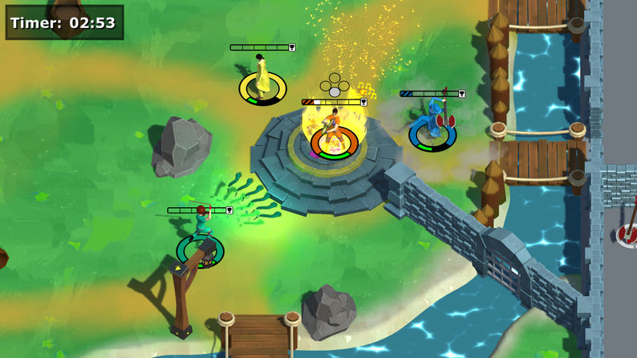

Drew White - Gameplay Programmer
Rock The House
Spring 2022-Winter 2022
Rock The House was one of my favorite projects that I've worked on as a student. It allowed me to delve into many different facets of Unity: input preservation, ScriptableObjects, custom UI solutions, and even more systems that made the game what it became. I'm very proud of the work I did on this project and am beyond excited to show it off below. Take a peek behind the curtain of this fast-paced, rockin' game into it's core systems and functionlity below. Read ahead!
It began as an idea...
During Spring 2022, I was placed on a team of four to create a prototype for a game that would compete to be chosen for full-development in Fall 2022. For the game to be greenlit, we had to create a solid prototype of the overall idea and back it up with documents and a pitch detailing our future efforts for the project. It was a daunting task, especially considering I was the sole programmer of a small team with aspirations for big things. Notably, we wanted to make a local-multiplayer party game where players would compete using magical instruments. Crazy, right? We were initially inspired by the chaotic but controlled magic system of Magicka, but with a stronger focus on guitars rather than wands.
The initial prototype went far smoother than we could've ever hoped. I made a few key decisions early on in development. For example, player movement would be driven by Unity's NavMesh system rather than physics or a CharacterController. This allowed us to have tight controls and constraints on where the player was able to go within the level. A byproduct of using NavMesh was I could also implement a point and click style of movement similar to League of Legends in a similar orthographic setting. To get local co-op working, I used Unity's Player Input Manager component and the New Input System to allow for easy controller support. As it was a prototype, I focused heavily on key functionality which helped keep scope creep in check.
We pitched our game, eventually titled Rock The House, to a panel of professors, alumni, and industry guests. Over the summer, we learned that our game was one of five chosen to continue. Not only did this mean having time to create the rest of the game, but it also meant four additonal members to the team. This blog will walk through the evolution of my systems from that original prototype to the final product and everything I learned along the way. Watch a video (and see my trailer-making ability) of the initial pitch trailer here.
From Guitars to Violins
With two new programmer's joining the team, it allowed me to really delve into the systems that I had already laid the groundwork for. First up: instrument switching.

In the game, there are four distinct states: unarmed, guitar, saxophone, and violin. As you can see on the right, I created four distinct Scriptable Objects to denote these states that hold their specific values and prefabs. Originally, we designed the game under the idea that these states would be inherent classes that players would choose at the start of a match. Every class would mean not only a specific visual instrument, but also a different base and special attack for each option. However, entering development in the Fall, we iterated on our design to instead have instruments become pickups. If a player "died", they would lose their instrument and enter the vulerable unarmed state. This meant that players would need to be able to change their held instrument, scripts, and animator on the fly frequently throughout the game. Luckily, I had already accounted for this in the Spring.

Every player has a Musician script. This component has multiple common uses (it's quite a behemoth), but an important factor is allowing players to save their current instrument state and switch it on the fly. Every instrument GameObject is saved as a child under the Player parent, meaning toggling them is a matter of turning on and off children (rather than constant instantiation). Every time a player picks up an instrument drop, a few key things happen:
- A mClasses enum (Unarmed, Guitar, Saxophone, Violin) is set to the new value in Musician
- Musician queries a helper function in the GameManager to grab the corresponding Scriptable Object
- The Scriptable Object supplies new values such as speed and the new animator pertaining to the selected instrument
- References are updated to accept the new instrument and animator
- Lastly, instrument-specific functions can be called to trigger certain particle or audio effects
This method of instrument switching proved to be effective for a few reasons. First, having the instruments be children of the player rig allowed for easy enabling/disabling and animator swapping. Second, having each instrument be children of an overall Instrument class meant that Musician could refer to an abstract reference. Some sections of this process can be seen below:

As I mentioned above, Musician keeps reference to a parent Instrument class. A perk of this is allowing Musician to call base functions, such as instrument-wide functions like triggering attacks. With Musician being closesly tied to the Player Input component, it accepts the input and passes it along to the Instrument reference it holds, where the individual instruments override virtual functions for specific use. This flow can be seen below:


The Musician to specific instrument pipeline is very important to the game loop. Instrument switching was a big success completed in early Fall 2022 that set the stage for the rest of development. The initial prototype was built mainly for guitars, so adding in the other instruments was music to our ears. The two images below show the conversion from guitars only to multiple instruments.


Making performing fun
There's another layer to the gameplay of Rock The House: performing. Players are able to grab instruments and fight with them, but what's the end goal? The center of the map holds a stage which is the key destination for those looking to win. If a player has an instrument, they can take the stage (only one at a time) and perform for the audience, gaining points as they do. Players are immobile and defenseless while performing, making it a risk vs. reward scenario: should you take the stage and play for as long as possible before players come to stop you, or do you try to stop others from doing so?
In the initial prototype, performing was as simple as taking the stage and holding a certain button. While it had the fun factor of determining how long to perform before you were in danger, it was lacking a certain...something. Performing was the key to winning our game and the act of doing so felt stale, devoid of the intensity that the moment was supposed to bring. We noticed as a team during playtesting that some players were naturally mashing the button rather than holding it. We were confused why at first, but it made sense: performing was this intense, fast-paced action and mashing seemed to personify the feeling that we wanted to give players. To create this new mashing system, I decided on a pool vs. banking system. Every mash would contribute to a bar that filled the player's UI. These are temporary points, not yet fully added to the player's score. Once the bar reaches a certain amount, the points leave the pool and are locked into the bank. This encourages that rush of deciding whether to keep mashing to bank their points, or hold off to remain safe.
The mashing system needed a few other factors. To detect whether a player was still mashing, I implemented a counter that checks if the last mash was detected in a certain amount of buffer time. If not, the player leaves the mashing state and the stage is open for anyone to take. Also, a mashing cap was an important addition. We were quite surprised when one of our playtesters had an auto-mashing controller that was able to win games in less than ten seconds.

As can be seen above, a currMashBuffer variable handles the detection of when a player has stopped mashing. Every new mash input resets the buffer to a variable time as Time.deltaTime continuously takes away from it. The mash cap works similarly: if a certain amount of mashes is detected in the time of a second, no more mashes are allowed until the next second passes. Mashing proved to be an engaging and exciting aspect of the gameplay loop that made every win feel as if the player had truly played their heart out. The difference between the initial performing and final performing can be seen below.

The player input issue
Rock The House is local 4-player multiplayer, meaning it can support up to four controllers or a keyboard. A big question arose when handling local co-op: how to handle moving players between Unity scenes while preserving player input (each player remains tied to their controller). For more context, our game utilizes a scene that serves as a lobby where player's can join, leave, and change the cosmetics of their character. Once the player's are prepared to play, the gameplay scene is loaded in. Originally, I used a data transfer object to tell the gameplay scene how many player's were in the lobby and their cosmetic options. This data would instantiate new player prefabs in the gameplay scene with the correct data, but there was a crucial piece missing: the input preservation. Let's say Player 1 in the lobby had a character with a red jacket. When moving to the gameplay scene, input would be scrambled as the new prefabs were instantiated, meaning Player 4 could end up with the red jacket and Player 1 would lose the character they made. This was an issue, but I had an idea of how to solve it.
My solution revolved around a simple idea: DontDestroyOnLoad. Instead of instantiating new player prefabs each scene transition, I created a system to instead have player's preserve their instances (notably the Player Input component) and build themselves accordingly based on the current scene. "Building itself" refers to turning on/off scripts pertaining to a certain system. For example, a player "building itself" in the gameplay scene would mean toggling on it's movement, health, and musician scripts while toggling off the lobby-specific scripts. How does this really work? Let's walk through some example steps:
- In the lobby scene, a player hits a button to join on controller. This spawns a new Player prefab with the key component PlayerSwitch
- PlayerSwitch, realizing it's the first time the player has been instaniated, grabs a reference to the input controller and builds itself as a character-customizable player
- After customization, the player enters the gameplay scene. PlayerSwitch builds itself as a controllable player
- The player can then move between the two scenes as needed, rebuilding itself while preserving player input
There's a few important things to note about this system. First, if a player enters a scene that isn't the lobby or gameplay scene, it will destroy itself (for example, entering the Main Menu). Second, because the player is moving between scenes, this means the Unity MonoBehaviour Start and Awake functions that trigger when a scene begins or a GameObject is instantiated only gets triggered the first time the player is instantiated in (as can be seen in the Awake function above). So, what about all of the other scripts that rely on these functions to be called when a scene is loaded in? To handle this, I created intermediary functions that serve as a Start or Awake, but with more control over the system at hand. PlayerSwitch, on every scene transfer, checks what scene the player was loaded into and calls the correct Restart functions accordingly.
The player input issue
Lastly, a major component of the game was it's UI. Not only did this mean the various on-screen elements and implementing art, but it also meant ensuring that all menus were keyboard and controller friendly. On every scene, inputs needed to be accepted from all of these sources without getting muddled or confused. To aid in this and to make modular, easy to use menu's, I needed to make a new system that made UI traversal easy.
I started by making a menu system that acted as a grid made of rows and columns. Were two buttons on the same horizontal plane? They could be inputted as a row. If a controller or WASD went right or left, it would traverse the columns. If it went up or down, it would traverse the rows. To allow everything to be placed inside a grid, I made a base parent Parameter class that every type of UI element could derive from. This meant that rows could be made up of buttons, sliders, toggles, etc. Another perk of this parent class was allowing for special actions depending on UI element actions: hover, click, or move. Every UI element was able to override these base functions. For example, a button could have a special Hover function to not only set it's color to yellow, but also trigger a content change in the Tutorial window of the screen.
This made making several menus in the game simple as they all relied on the same system. Every time a new controller or keyboard sent an input, it would add a new instance to traverse the grid. On the same hand, such as in the pause menu of the game, the system could be built upon to check for specific instances. For example, if P3 pauses the game, each input would check the current player's ID to see if it matched P3 before grid traversal. Below are some examples of the menus that used my system:
What I learned
As mentioned before, Rock The House was one of my favorite development experiences. Everyone on the team was passionate for the game and it was amazing to see so many people playtest and enjoy our game. The project pushed me in many new areas in programming, but it also bolstered my sense of organization and designer-friendliness. Every system I made was created in a way that it could be used for many cases and changed based upon the wishes of the team. This project taught me the value of cross-discipline work even further as I needed to work with art, design, and audio to get all of the moving pieces in place.
In terms of programming, this project pushed the boundaries of my systems knowledge and the ways in which engines can be used for the game's benefit. For example, preserving players across scenes and the input preservation system was a high-point for me, as it allowed the team to hit the floor running when it came to playtesting and putting controllers in people's hands. Overall, I feel as if I have a better sense of the ways in which systems can tie a game's core pillars together.
Wanna see more?
Check out the Rock The House itch.io page here! It was released as part of a charity bundle benefitting Gamer's Outreach and the MSU Game Development club Spartasoft. Grab some friends or family, pick up some controllers, and start rocking those houses!